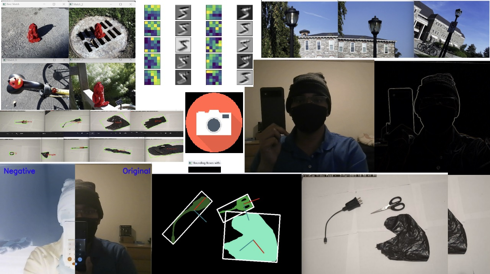

Perception for Self Driving Cars
Project Overview
This page covers the projects I completed as part of my coursework for Computer Vision and Pattern Recognition. Fundamentals were covered and implemented as part of the classical computer vision projects such as filtering, histogram matching, knn, segmentation, clean up and more. Here is a detailed summary of the various projects I have successfully completed:
Sub-projects
-
Real-Time Filtering
This project is designed to perform real-time filtering on images using C++. The project includes options for filtering images based on different techniques and user-defined parameters. The user can also write the filtered image to a local directory and read images from the same directory.
-
Content-Based Image Retrieval using histograms
Focuses on image retrieval using histograms and channel values. The project includes options for baseline matching, histogram matching, multi-histogram matching, texture and color-based feature vectors, and a custom design. The program displays the top three matches for the target image based on the selected method.
-
Real-time 2-D Object Recognition
This project aims to develop a program that identifies objects placed on a white background in real-time. The program utilizes a video stream to detect objects and uses thresholding, cleaning up binary images, segmenting images into regions, and computing features for each major region. The program also collects training data, classifies new images using the nearest neighbor function and k-nearest neighbor classifier, and evaluates performance using confusion tables. Currently, multiple objects are detected but not classified.
-
Deep Learning: Digit Recognition, Network Analysis, Transfer Learning, and Hyperparameter Exploration
The project involved several key tasks. First, a neural network was built and trained to recognize digits using the MNIST dataset, achieving improving accuracy over 5 epochs and producing near-perfect results. The trained network was then examined, visualizing the first layer's weights and their effects on input images. Next, transfer learning was applied to adapt the model for recognizing Greek letters, showing significant progress in just 20 epochs. Finally, a study on the variation of hyperparameters was conducted, exploring the impact of changes in the number of convolution layers, filter size, number of filters, and epochs on network performance. This comprehensive project encompassed digit recognition, network analysis, transfer learning, and hyperparameter experimentation.